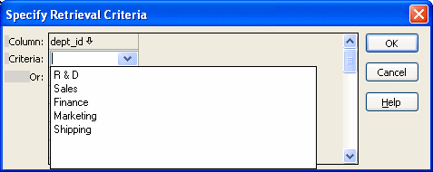

In a DataWindow object, you can prompt for retrieval criteria, retrieve rows as needed, and save retrieved rows to disk.
You can define your DataWindow object so that it always prompts for retrieval criteria just before it retrieves data. PowerBuilder allows you to prompt for criteria when retrieving data for a DataWindow control, but not for a DataStore object.
 To prompt for retrieval criteria in a DataWindow object:
To prompt for retrieval criteria in a DataWindow object:
If the Column Specifications view is not already displayed, select View>Column Specifications from the menu bar.
In the default layout for the DataWindow painter, the Column Specifications view displays in a stacked pane under the Properties view. All columns defined for the DataWindow object are listed in the view.
Select the Prompt check box next to each column for which you want to specify retrieval criteria at runtime.
When you specify prompting for criteria, PowerBuilder displays the Specify Retrieval dialog box just before a retrieval is to be done. (It is the last thing that happens before the SQLPreview event.)
Each column you selected in the Column Specification view displays in the grid. Users can specify criteria here exactly as in the grid in the Quick Select dialog box. Criteria specified here are added to the WHERE clause for the SQL SELECT statement defined for the DataWindow object.
 Testing in PowerBuilder You can test the prompting for criteria by retrieving data
in the Preview view of the DataWindow object.
Testing in PowerBuilder You can test the prompting for criteria by retrieving data
in the Preview view of the DataWindow object.
If a column uses a code table or the RadioButton, CheckBox, or DropDownListBox edit style, an arrow displays in the column header and users can select a value from a drop-down list when specifying criteria:

If you do not want the drop-down list used for a column for specifying retrieval criteria, select the Override Edit check box on the General page of the column's Properties view.
If you have specified prompting for criteria for a column, you can force the entry of criteria for the column by selecting the Equality Required check box on the General page of the column's Properties view. PowerBuilder underlines the column header in the grid during prompting. Selection criteria for the specified column must be entered, and the = operator must be used.
The section "Using Quick Select" describes in detail how you and your users can specify selection criteria in the grid.
The chapter on dynamic DataWindow objects in the DataWindow Programmer's Guide describes how to write code to allow users to specify retrieval criteria at runtime.
If a DataWindow object retrieves hundreds of rows, there can be a noticeable delay at runtime while all the rows are retrieved and before control returns to the user. For these DataWindow objects, PowerBuilder can retrieve only as many rows as it has to before displaying data and returning control to the user.
For example, if a DataWindow object displays only 10 rows at a time, PowerBuilder only needs to retrieve 10 or more rows before presenting the data. Then, as the user pages through the data, PowerBuilder continues to retrieve what is necessary to display the new information. There may be slight pauses while PowerBuilder retrieves the additional rows, but these pauses are usually preferable to waiting a long time to start working with data.
 To specify that a DataWindow object retrieve only as
many rows as it needs to:
To specify that a DataWindow object retrieve only as
many rows as it needs to:
Select Rows>Retrieve Options>Rows As Needed from the menu bar.
With this setting, PowerBuilder presents data and returns control to the user when it has retrieved enough rows to display in the DataWindow object.
Retrieve Rows As Needed is overridden if you have specified sorting or have used aggregate functions, such as Avg and Sum, in the DataWindow object. This is because PowerBuilder must retrieve every row before it can sort or perform aggregates.
In a multiuser situation, Retrieve Rows As Needed might lock other people out of the tables.
If you want to maximize the amount of memory available to PowerBuilder and other running applications, PowerBuilder can save retrieved data on your hard disk in a temporary file rather than keep the data in memory. PowerBuilder swaps rows of data from the temporary file into memory as needed to display data.
 To maximize available memory by saving retrieved
rows to disk:
To maximize available memory by saving retrieved
rows to disk:
Select Rows>Retrieve Options>Rows to Disk from the menu bar.
With this setting, when displaying data, PowerBuilder swaps rows of data from the temporary file into memory instead of keeping all the retrieved rows of data in memory.